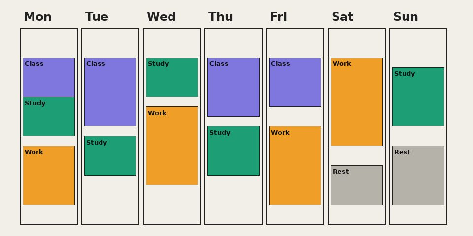

Plan
A weekly planner form and a sample week to copy from.
Time Blocks
Time Blocks helps computer science students who also work part time see their whole week in one place. The idea comes from time blocking: you block out classes, shifts, study time and rest, then check whether the plan is actually possible.
No account is needed. Every page is written to be quick to read between classes and shifts.
Reading time: 2 minutes
Last updated: October 2026

A weekly planner form and a sample week to copy from.
Project step templates, exam prep and focus sessions.
Sleep targets, money basics and time for music or other projects.
A short weekly review so each week teaches you something about the next.